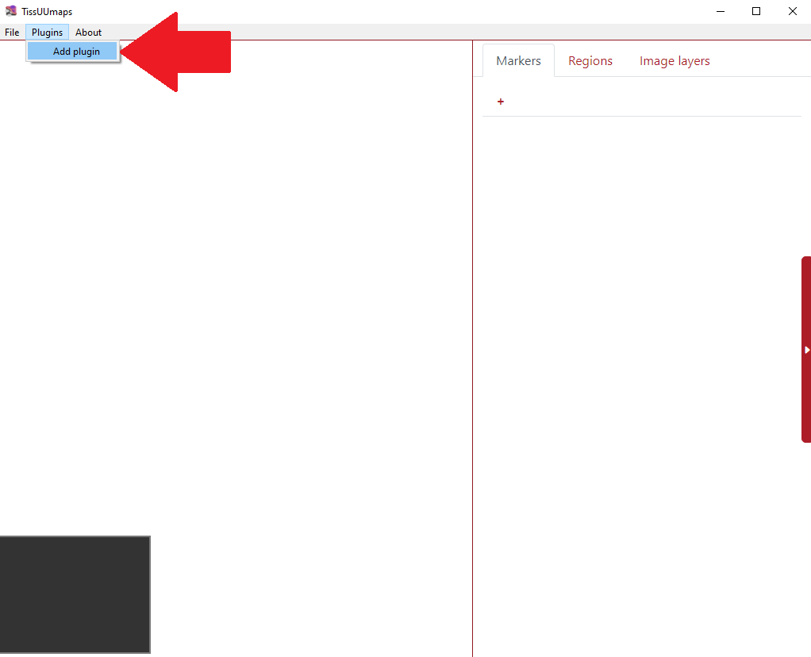
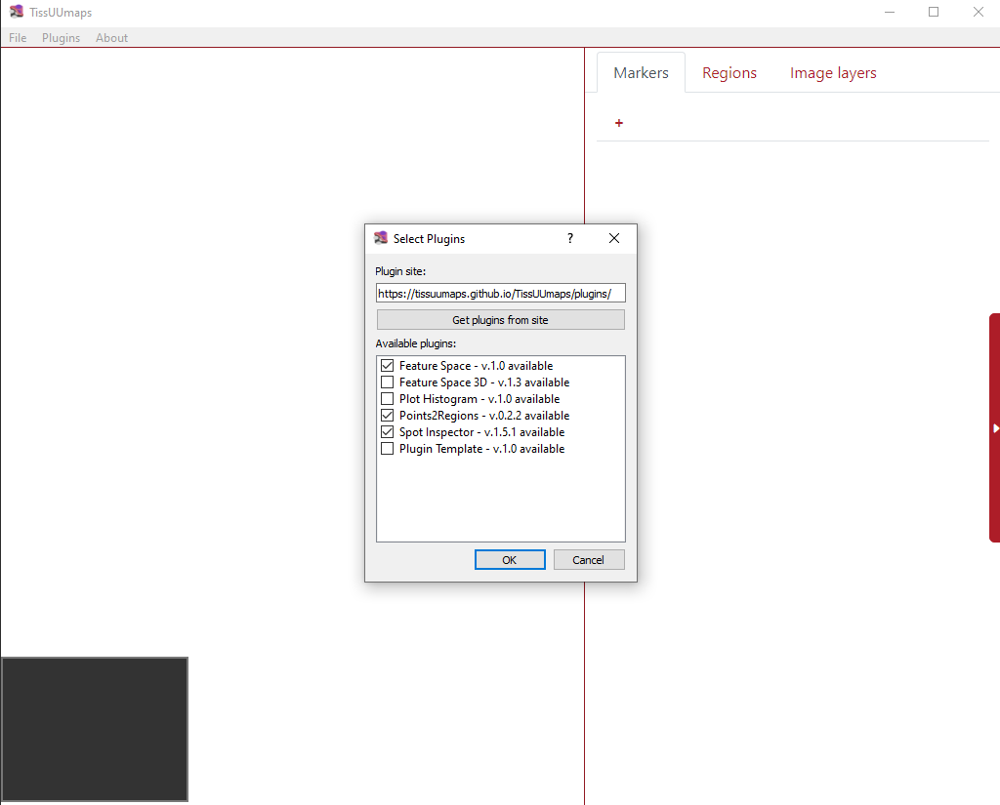
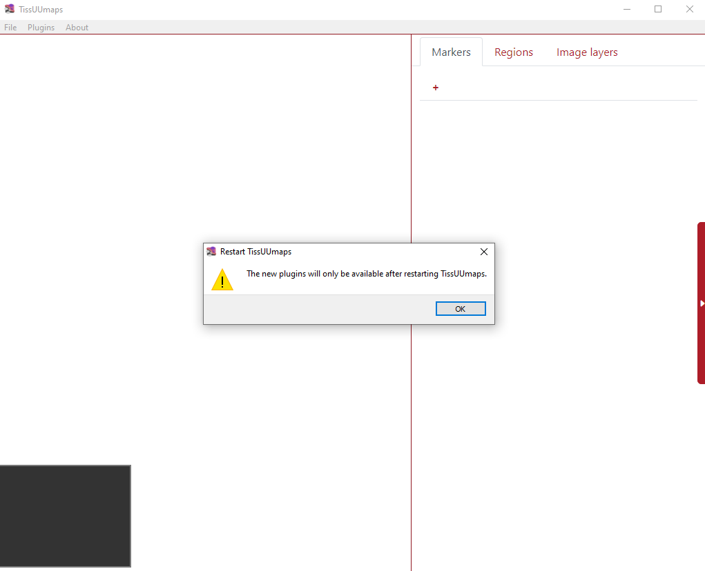
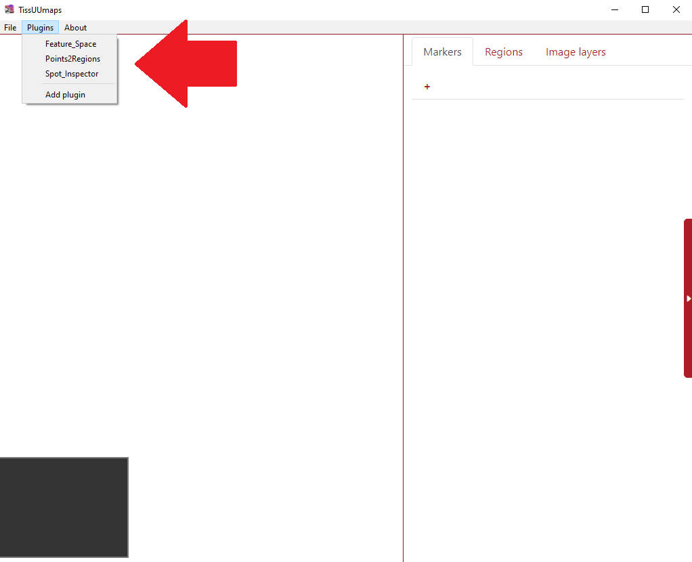
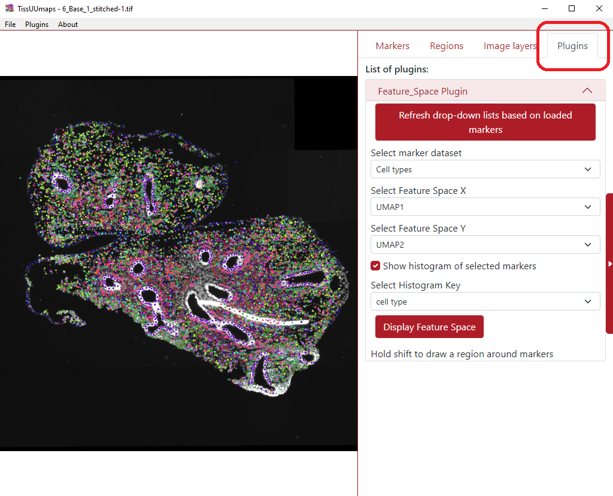
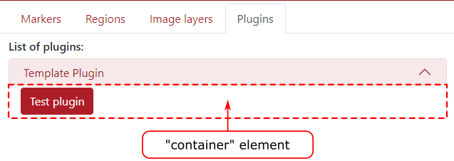

Plugins¶
Load plugins¶
In order to load plugins, first, they need to be installed. This can be done in the menu Plugins > Add plugin as can be seen in the example below.

Consequently, the user can check any number of plugins they desire and press OK.

Then the tool warns the user then the installed plugins will be available after restarting TissUUmaps.

After restarting the TissUUmaps, all the installed plugins are listed in the menu Plugins as you can see in the figure below.

Once the user selects any of the installed plugins (in the example below I selected Feature_Space), a new tab Plugins appears in the upper right part of the screen with all the required boxes for filling.

Make your own plugin¶
Download the Plugin Template python and javascript files from the Plugin Update Site and put both files in your local folder $USER_PATH/.tissuumaps/plugins/. You can then change the plugin name and add your own options and functions.
Javascript file¶
When loading a plugin, the function PluginName.init(container) will be called. The container is an html Element that will be added to the plugin menu. Use this element to add options and texts related to your plugin.

Javascript example:¶
File Plugin_template.js:
var Plugin_template;
Plugin_template = {
name: "Template Plugin",
parameters: {
_section_test: {
"label": "Test section",
"title": "Section 1",
"type": "section",
"collapsed": false
},
_message: {
"label": "Message",
"type": "text",
"default": "Hello world"
},
_testButton: {
"label": "Test button",
"type": "button",
},
}
};
/**
* This method is called when the document is loaded.
* The container element is a div where the plugin options will be displayed.
* @summary After setting up the tmapp object, initialize it*/
Plugin_template.init = function (container) {
interfaceUtils.alert("The plugin has been loaded");
};
/**
* This method is called when a button is clicked or a parameter value is changed*/
Plugin_template.inputTrigger = function (input) {
console.log("inputTrigger", input);
if (input === "_testButton") {
let message = Plugin_template.get("_message");
Plugin_template.demo(message);
}
}
Plugin_template.demo = function (message) {
let successCallback = function (data) {
interfaceUtils.alert(data);
};
let errorCallback = function (data) {
console.log("Error:", data);
};
// Call the Python API endpoint "server_demo"
Plugin_template.api(
"server_demo",
{message: message},
successCallback,
errorCallback,
);
};
Plugin parameters¶
The parameters object contains the parameters of your plugin. Each parameter is an object with the following properties:
label: the text that will be displayed in front of the parameter.type: the type of parameter. It can be one of the following:button: an input button.checkbox: a checkbox input.text: a text input.number: a number input.select: a dropdown list.label: a text label.section: a section that can be collapsed or expanded.
default: the default value of the parameter [fortypeincheckbox,number,select,text].options: an array of options [fortypeinselect].title: the title of a section [fortypeinsection].collapsed: a boolean indicating if a section is collapsed or expanded by default [fortypeinsection].
Javascript API¶
TissUUmaps offers helper functions to help you create your plugin:
My_plugin_name.set(paramName, value): set the value of a parameter.My_plugin_name.get(paramName): get the value of a parameter.My_plugin_name.getInputID(paramName): get the id of the html element associated with a parameter.My_plugin_name.api(endpoint, data, successCallback, errorCallback): call a Python method from Javascript. The endpoint is the name of the method, and the data is an object that will be passed as a parameter to the method. The successCallback and errorCallback are functions that will be called after the method has been called. The successCallback will be called with the result of the method as a parameter, and the errorCallback will be called with the error message as a parameter.
You can access the complete TissUUmaps javascript API here.
Python file¶
You only need to use the Python file if your plugin needs to do processing on the server side. For pure javascript plugins, you can leave this file empty.
The python file should implement the class Plugin:
import logging
import time
from flask import abort, make_response
class Plugin:
def __init__(self, app):
self.app = app
def server_demo(self, jsonParam):
if not jsonParam:
logging.error("No arguments, aborting.")
abort(500)
resp = make_response("The server received the message: " + jsonParam["message"])
return resp
The app object being the flask application running the TissUUmaps server.
You can call a Python method inside the Plugin class from Javascript using Ajax and the Python API. The endpoint for a method methodName of the plugin PluginName will be: /plugins/methodName/functionName. Data can be transmitted through Ajax as stringified JSON, and will be available as a parameter inside the method.
See the Plugin Template for a working example of Javascript / Python communication.